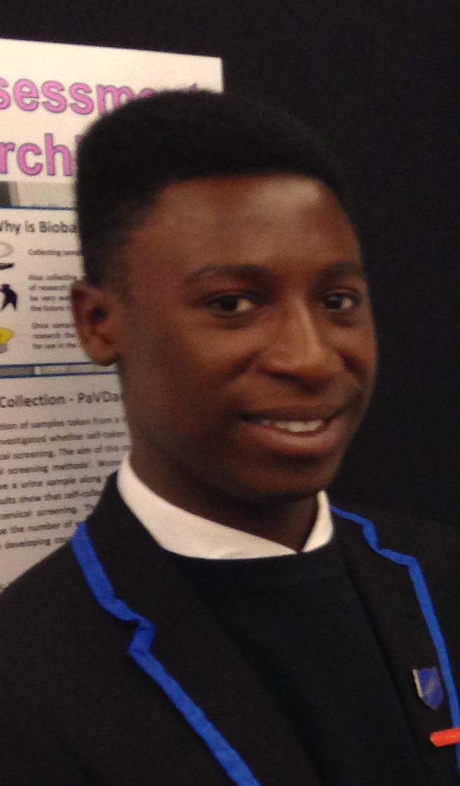

Lab Members
|
Melanie I Stefan, Group leader My research interests revolve around using computers to understand learning and memory, from simulating how proteins in the brain work together to strengthen the connection between neurons to using educational data to understand how students learn. |
|
|
Zale Cao, PhD student Coming from an engineering background, I'm interested in using computation models to understand how chemical reactions in the brain leads to learning. I'm currently a long distance PhD student based in Zhejiang University's Haining International Campus. |
|
|
Richard Fitzpatrick, PhD student My interests extend from developmental neuroscience all the way to learning and memory, and how signalling pathway interactions can be understood in relation to cognition and behaviour. My current work is the multi-scale modelling of intellectual disability disorders such as Fragile X Syndrome, integrating biochemical and electrophysiological data to give a more complete idea of what is going on in the system as a whole. I'm also heavily interested in Philosophy of Mind, in my spare time attempting to provide a neuroscientifically-grounded enactivist account of declarative memory. |
Lab alumni
|  |
Excellence Ogunbayo, Summer student, 2016 Now (2016): Student, St Columbas RC High School |
|
Kadri Pajo, Visiting MSc student, 2016 Now (2016): MSc student, Karolinska Institute, Stockholm (SE) |
|
|
Yubin Xie, MSc student, 2015-2016 Now (2016): Research scholar, University of Chicago (US) |